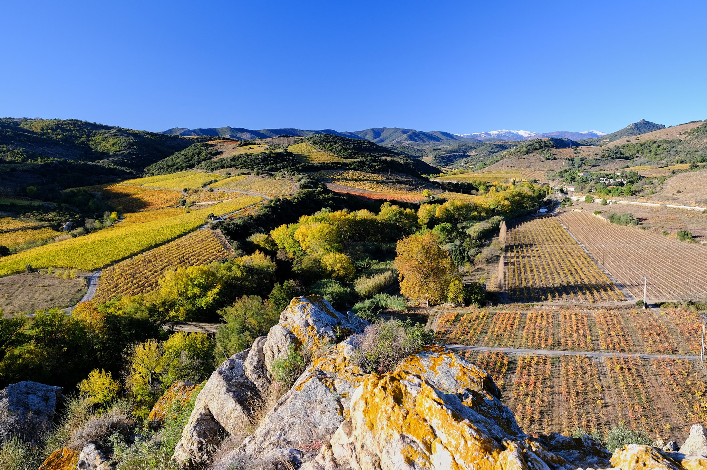
Aude (11) - ISO 320 1/450 s f/3.2 18mm - FUJIFILM X-S10
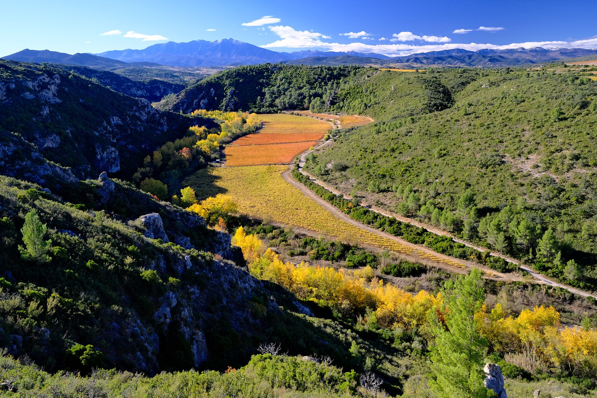
Aude (11) - ISO 320 1/400 s f/3.2 18mm - FUJIFILM X-S10
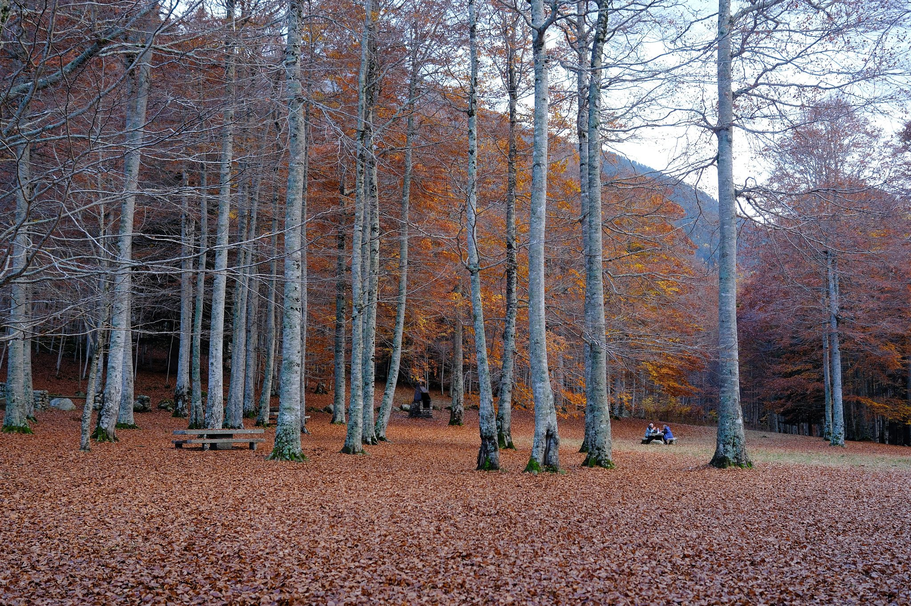
Espagne - ISO 125 1/50 s f/1.4 18mm - FUJIFILM X-T5
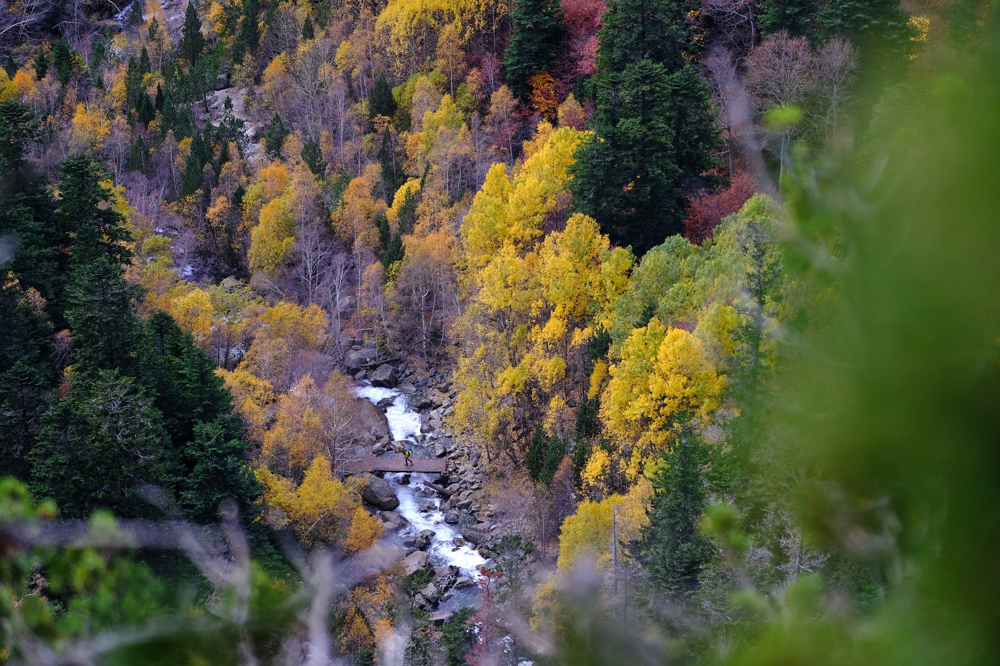
Espagne - ISO 160 1/280 s f/2 90mm - FUJIFILM X-T5
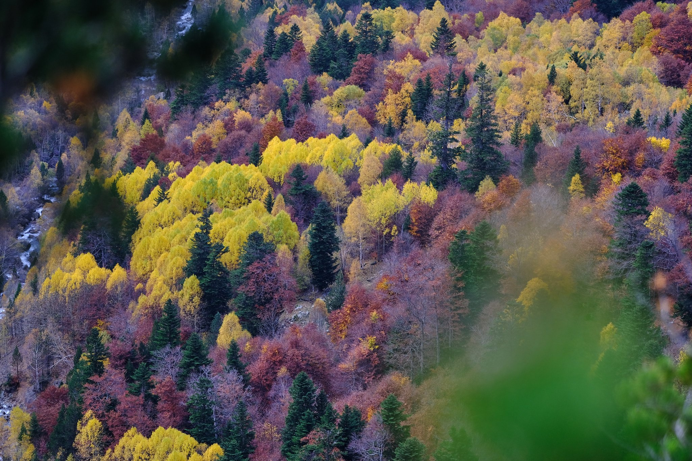
Espagne - ISO 160 1/250 s f/2 90mm - FUJIFILM X-S10
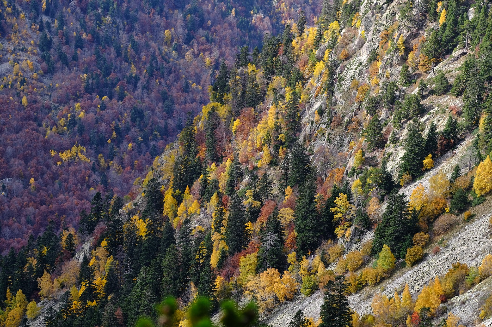
Espagne - ISO 160 1/400 s f/2.5 90mm - FUJIFILM X-S10
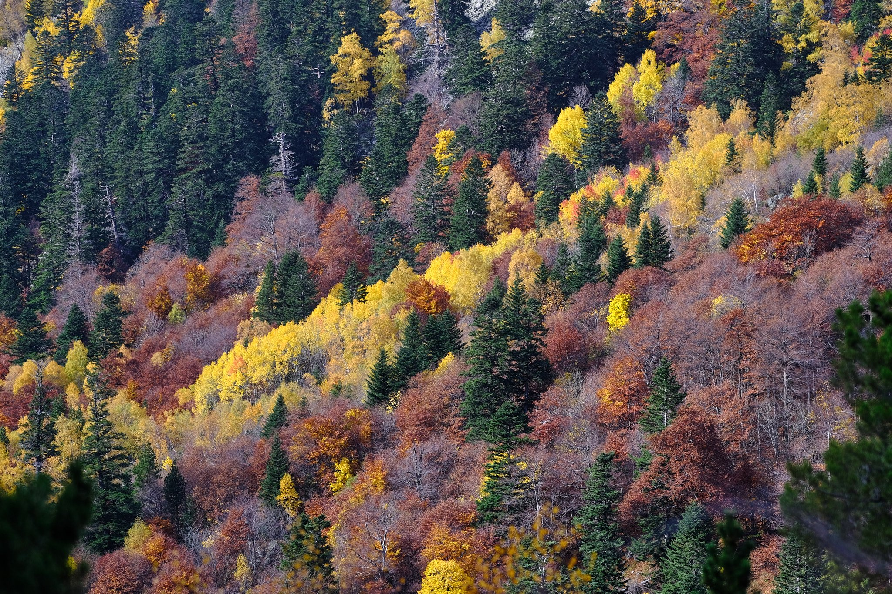
Espagne - ISO 160 1/400 s f/2.2 90mm - FUJIFILM X-T5
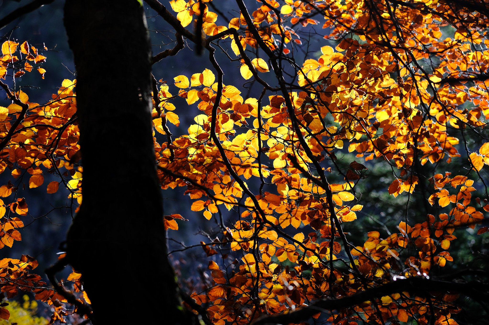
Espagne - ISO 320 1/480 s f/2.5 90mm - FUJIFILM X-T5
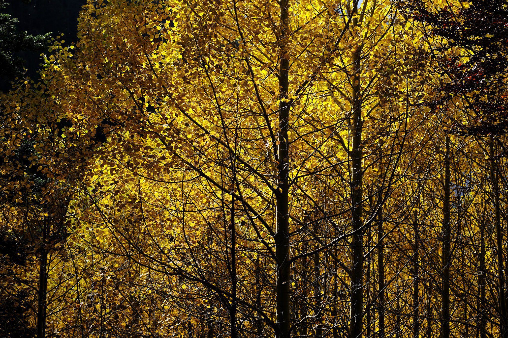
Espagne - ISO 160 1/500 s f/2.8 90mm - FUJIFILM X-T5
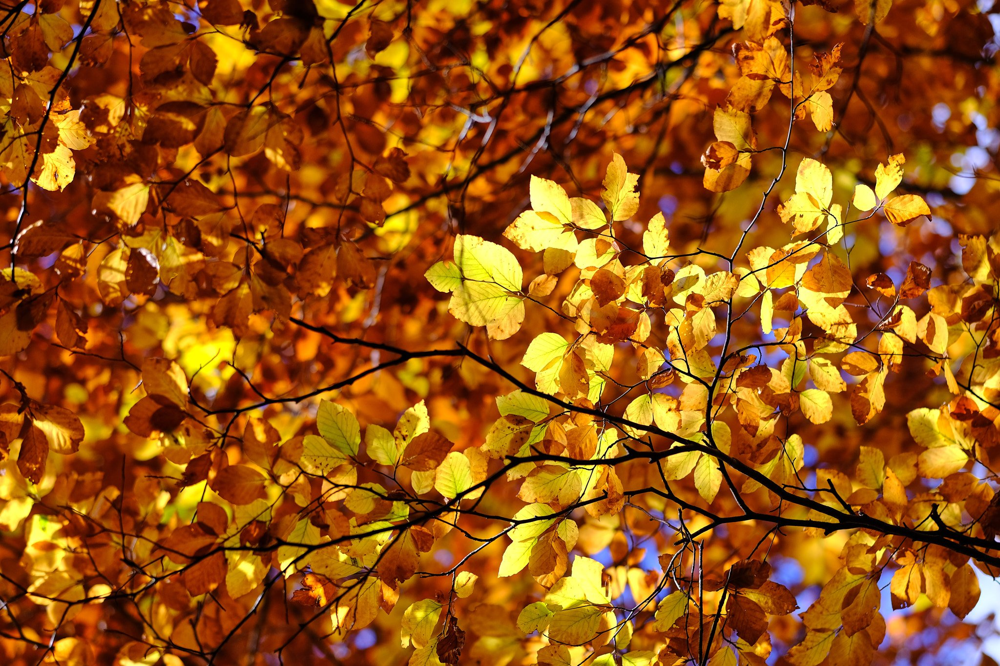
Espagne - ISO 320 1/400 s f/2.2 90mm - FUJIFILM X-T5
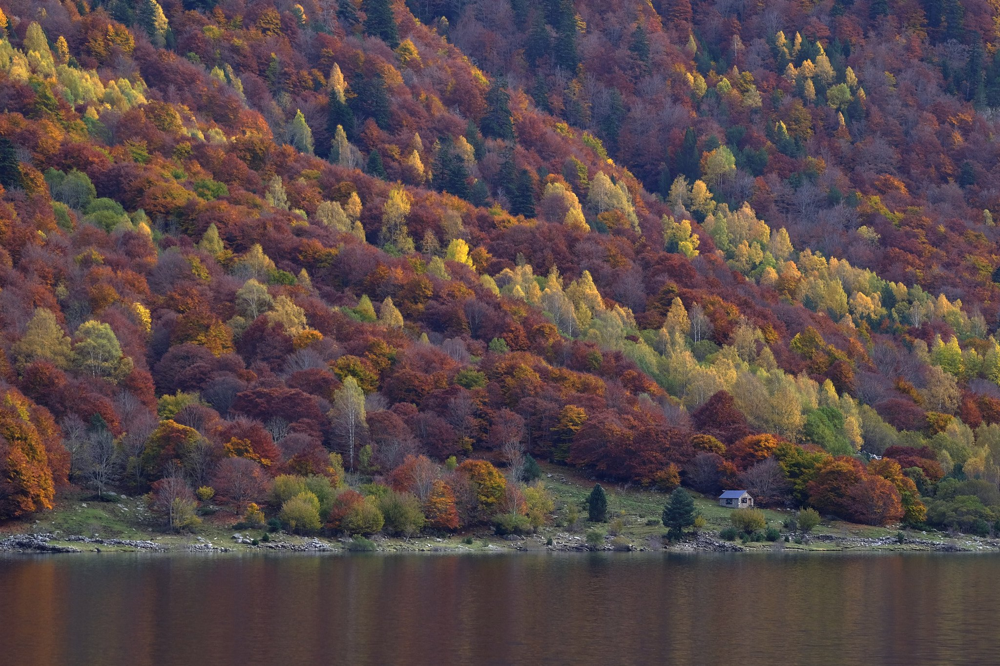
Espagne - ISO 640 1/250 s f/2 90mm - FUJIFILM X-T5
❮
 ❯
❯